浦东规土局地理信息系统
用户手册
编号：
|
版本记录 |
||||||
|
版本号 |
修改状态 |
修改日期 |
修改摘要 |
撰稿人 |
校对 |
审核 |
|
1.0 |
创建 |
2012-12-31 |
编写用户手册 |
|
|
|
|
|
|
|
|
|
|
|
|
|
|
|
|
|
|
|
|
|
|
|
|
|
|
|
关于此文档
目 录
第1章
简介
本手册仅限于浦东规土局地理信息系统软件，提供操作步骤及功能描述用以指导有关用户及后期新版本开发人员使用平台及各个子系统，以达到便捷快速地使用该系统的目的。
|
缩略语 |
定义 |
|
|
|
|
编号 |
文档名 |
来源 |
备注 |
|
1 |
浦东规土局地理信息系统开发用户使用说明书 |
VSS |
|
|
2 |
浦东规土局地理信息系统产品需求说明书 |
VSS |
|
浦东新区规土局地理信息系统以GIS技术为基础，采用面向服务的体系架构（SOA），整合规土局内部的专业空间数据与基础地理数据，建立高效、稳定、更新及时的空间数据库，构建规土局基础地理信息服务平台，以REST、WEBSERVICES等方式对外提供服务。通过本系统的建设，统一和规范规土局内部GIS的底图数据标准，共享各部门维护和管理的专业空间数据，提供一个基于规土局内部统一的地理地图数据展示平台。
浦东规土局地理信息系统主要提供地图浏览、空间测量、空间定位、空间查询、专题主图、地图输出、统计地图、动态地图、地图标绘等核心功能。
系统的功能概述如下表所示：
|
系统名称 |
模块名称 |
功能名称 |
功能概述 |
|
浦东规土局地理信息系统 |
地图浏览 |
拉框放大，缩小 |
在地图上拉框放大，缩小地显示地图 |
|
滑竿缩放 |
拖动比例尺滑竿缩放显示地图 |
||
|
地图全景 |
地图初始化范围 |
||
|
地形图遥感图切换 |
地形图和遥感图的切换显示 |
||
|
地图平移 |
拖动显示地图 |
||
|
鹰眼 |
支持鹰眼展示 |
||
|
导航 |
导航回到之前的视图，或导航到下一个视图 |
||
|
基础工具 |
书签 |
将当前范围作为书签添加并记录，可点击定位到地图 |
|
|
地图量测 |
空间长度，面积的测量 |
||
|
动态标绘 |
1.拖拽图标：拖抓图标在地图上，并可改变其位置，图标属性可配置 2.绘制曲线：在地图上绘制曲线，颜色，粗细可设定 3.标注文字：在地图上标注文字，文字颜色，大小可设定 |
||
|
图层控制 |
列出当前地图上打开的图层，图层关键字模糊查询，定位 |
||
|
周边查询 |
选择地图图层，通过属性-空间的查询，表格显示查询结果，点击可以对目标定位，并可将查询结果的详细信息以Excel导出 |
||
|
态势分析 |
1.缓冲区路径分析：设定中心点，分析以这个点为中心路径0-500米，500-800米，800-10000米的路径影响范围 2.最短路径分析：设定必经点和障碍点，分析最短路径 |
||
|
滤镜 |
卷帘模式，和聚光灯模式提供滤镜的功能。方便分析和对比不同时期的图层 |
||
|
地图保存 |
保存当前视图范围显示的地图的图片信息到本地 |
||
|
地图打印 |
打印输出当前视图范围内的地图 |
||
|
地图定位 |
街道定位 |
1.街道（居委）定位：选择街道 （居委）后，定位并网格覆盖显示显示 2.交叉道路定位：输入道路名称（提供自动补全功能），查找，定位并高亮显示 |
|
|
规划查询 |
详细规划 |
查询和显示详细规划的相关信息 |
|
|
单元规划 |
查询和显示单元规划的相关信息 |
||
|
分区规划 |
查询和显示分区规划的相关信息 |
||
|
总体规划 |
查询和显示总体规划的相关信息 |
||
|
工程查询 |
选址意见 |
查询并显示工程选址意见的相关信息。 |
|
|
用地许可 |
查询和显示工程用地许可的相关信息。 |
||
|
工程许可 |
查询和显示工程（规划）许可的相关信息。 |
||
|
土地查询 |
违法用地 |
查询和显示违法用地的相关信息 |
|
|
详规统计 |
街镇统计 |
统计指定时间内全区各个街镇进行过的规划的项目的个数，或总的规划面积的数目，通过列表，饼图，柱状图等方式显示这些信息。 |
|
|
全区统计 |
统计指定时间范围内全区进行的规划的数目，或者规划用地面积的总数目。可以以列表，饼图，柱状图的方式显示这些信息。 |
||
|
通用查询 |
通用查询 |
可查询土地规划所有方面的信息，在一个统一的界面列表显示这些信息。导航到相应分类下可查看相应分类的详细信息。 |
系统运行软件环境
支持服务器操作系统WINDOWS 2003 Server以上版本；
支持应用服务器Microsoft IIS 6.0；
支持关系型数据库Oracle 9i/10g, SQLServer 2000以上；
支持主流浏览器：IE 7/8等；支持HTTP协议；
硬件环境
系统访问地址：http://10.1.30.153:8080/PDGT_GIS/index.html
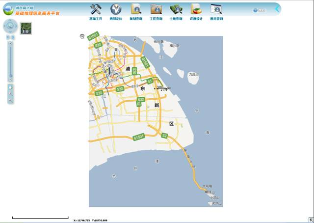
3.1 地图浏览
系统左下方功能按钮，点击带“+”/“-”号的放大镜按钮，该按钮将会显示为选中状态。在地图上拉框或点击。按住鼠标左键在地图上拖动，以选择要放大/缩小的矩形区域。
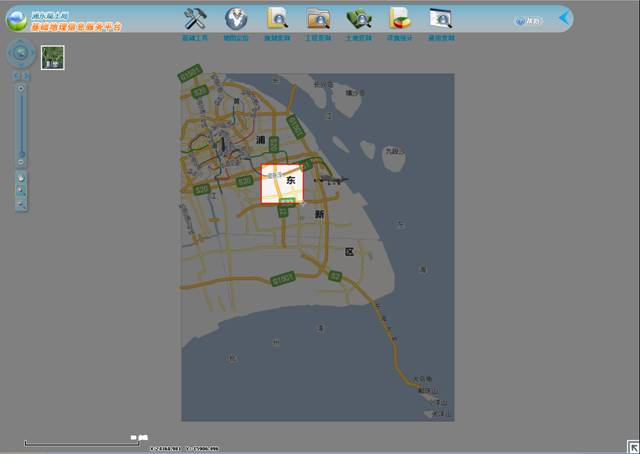
主要功能模块选项，包括基础工具，地图定位，规划查询，工程查询，土地查询，详规统计，通用查询和帮助菜单。
滑竿缩放在系统中有两种实现方式：
Ø
鼠标滚轮向前滚动，地图将按一定比例放大；鼠标滚轮向后滚动，地图将按一定比例缩小。
Ø
使用系统左侧比例尺控制条，点击“+”/“-”号，地图将逐级放大/缩小；拖动滑块，地图将缩放到滑块指定的比例尺级别。
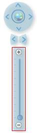
点击图示功能按钮显示地图初始化范围。
地图平移有两种实现方式：
Ø
点击击图示功能按钮进行平移
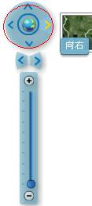
Ø
点击图示按钮，当“手型”按钮显示选中状态后，在地图上拖动显示地图。
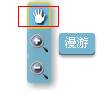
点击图示功能按钮，切换到相应地图显示。点击后提示信息发生相应改变，在下图的两图标中切换。
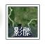
Ø 遥感图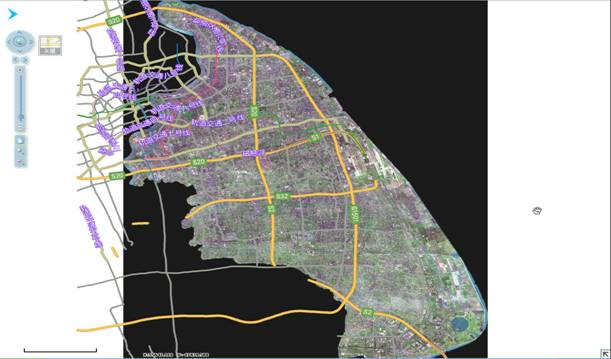
Ø 基础图层
Ø 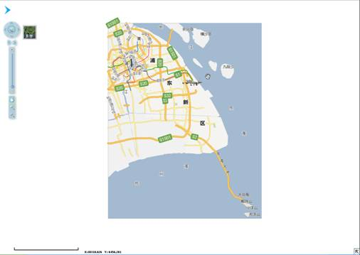
点击图示“箭头”功能按钮使用鹰眼功能。（通常在左下角，未点击时为为朝向左上的箭头）
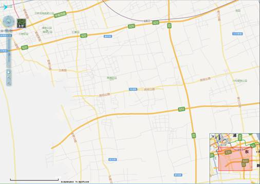
点击系统左上方“基础工具”图标，进入“基础工具”功能菜单。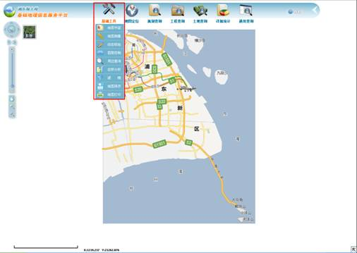
点击“地图书签”选项，打开“地图书签”的工具界面，
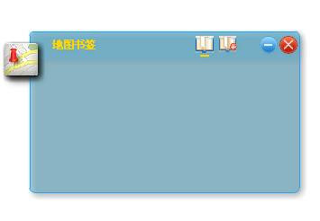
单击中的小图标，查看，添加书签。以及最小化和关闭地图书签工具
单击中的红色框选图标，切换到“添加书签”面板。如下所示：
输入名称后，点击添加按钮，会将当前范围作为书签保存，并跳转至“地图书签”操作面板；如下所示。“书签操作面板”显示已添加的书签列表，单击可以定位到该书签的地图范围。当不再需要该书签时，可以点击对应的书签右边的“X”图标，即可删除书签。
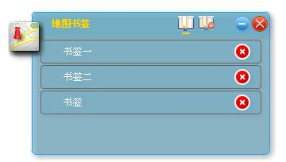
点击“地图测量”选项，打开地图测量工具。可选择的有长度测量，和面积测量，以及清除测量信息，三个选项。如下图：
选择长度测量，可以测量当前视图可见范围内任意折线段的长度，点击长度测量后，即可在地图上进行，画线的操作，单击确定这条折线的一个顶点，双击结束画线，地图测量工具栏的底部显示测量结果。示例如下图：
下图中红线即为所画线段
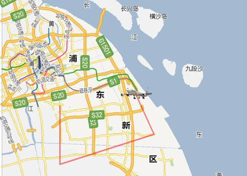
点选面积测量，则可以在地图上圈定一定的面积，并将结果显示在地图测量工具下方。下图中由红线包围的部分（红色网格覆盖的部分）即为实际所要测量的面积的范围。
若要清除测量痕迹和测量结果，可点击地图测量工具栏上的清除按钮，就能清除地图上的测量标记和地图测量工具上显示的测量数据。
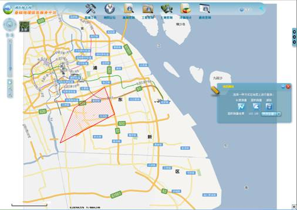
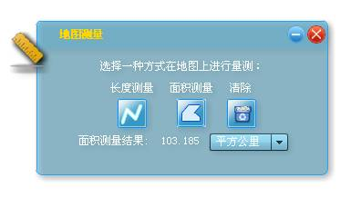
点击“动态标绘”选项，打开动态标绘工具。工具界面如下图所示：
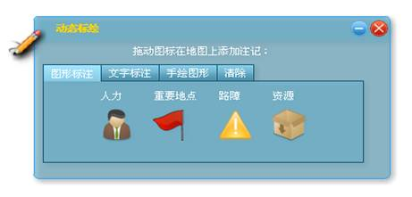
Ø 图形标注：
可选择小工具中图形标注标签下的图标拖动到地图上进行标记，效果如下图。若要改变图标位置直接在地图上选中图标进行拖动，拖放到合适的位置即可
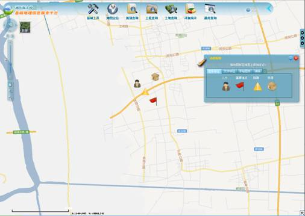
若要删除单个已标记在地图上的图标，只需在要删除的图标上双击，就会弹出确认删除的界面，确认就可删除。若要删除所有已标记的图标，则可在小工具中选中清除标签，然后点击清除标签下的清除图标，即可清除所有的已经在地图上进行的标注。
Ø 文字标注：
选中动态标绘工具中的文字标注标签，工具显为如下图界面
在输入文字的输入框内输入想要在地图上标记的文字，选择好字号和颜色，然后拖动左侧标有help的图标到地图上即可进行标记。效果如下图所示：
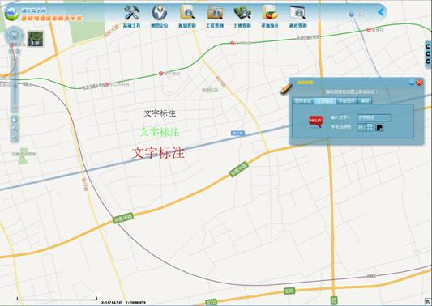
Ø 手绘图形
点击动态标绘工具中,手绘图形导航标签，进入“手绘图形”操作面板。
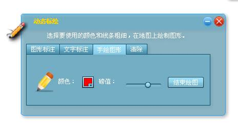
设定手绘图形的颜色，线条的粗细，点击手绘图形标签下的“”图标，拖动鼠标在地图上绘图，点击结束绘图。效果如下图：
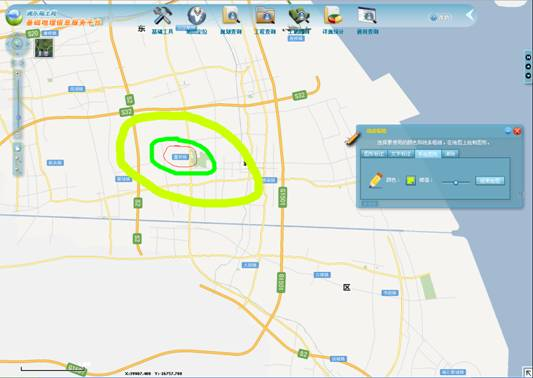
Ø 清除
点击动态标绘工具中的“清除”标签按钮，进入“清除”操作界面。
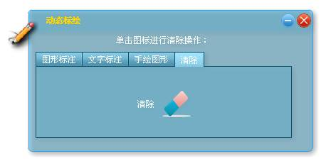
点击清除界面中的“清除图标”，可以清除地图上所有用动态标绘工具绘制的图标，图形。
点击“图层控制”图标，进入“图层控制”面板；系统将以树状目录的形式显示可选图层。
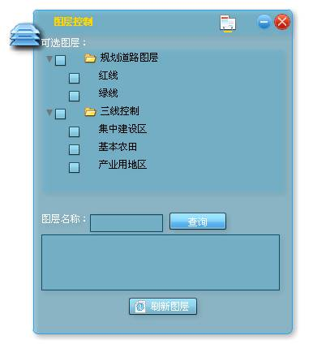
单击规划道路图层或三线控制树上的三角形可以查看该图层类型下的子项，单击方框可对该图层进行勾选。结束勾选后，单击“刷新图层”，系统将切换到当前可见图层面板。树上被勾选的图层都将在地图上显示。
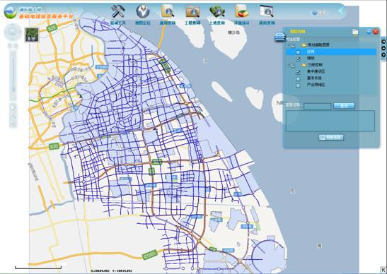
在图示输入框中输入名称，点击查询按钮，可对图层进行模糊查询；单击某一条查询结果，定位查询结果在树状目录的位置，帮助用户选择可显示的图层。
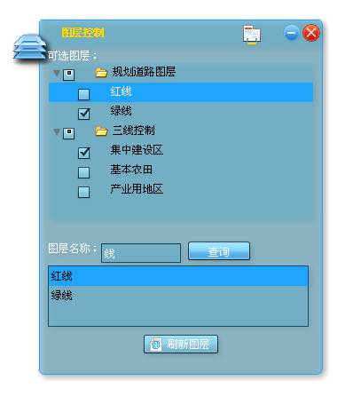
点击基础工具中的“周边查询”选项，打开“周边查询”工具面板。点击中的图标， 可在“属性查询”面板 ，“空间查询”面板和“查询结果”面板之间切换。
Ø 属性查询
点击中红色框选图标，进入“属性查询”操作面板。选择查询图层，输入关键字，点击“查询”按钮进行模糊查询，并跳转到“查询结果”操作面板；点击“清除”按钮，可清除已填内容。
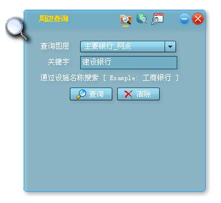
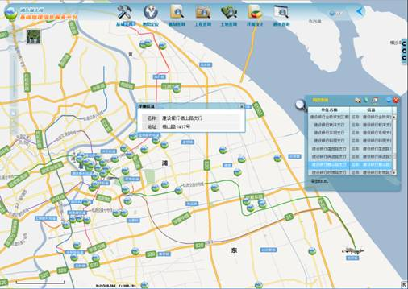
点击查询结果界面中中红色框选图标，可将查询结果以Excel格式导出。
Ø 空间查询
点击中红色框选图标，进入“空间查询”操作面板。
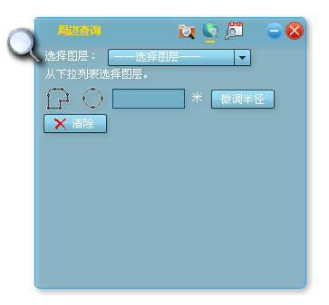
点击红色框选下拉框选择查询图层；点击选择绘图类型；选择圆形还可以进行微调半径。
点击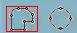中红色框选图标，可以在地图上上绘制多边形，单击左键开始，双击左键完成后，跳转到查询结果显示面板，地图上并显示其查询结果。
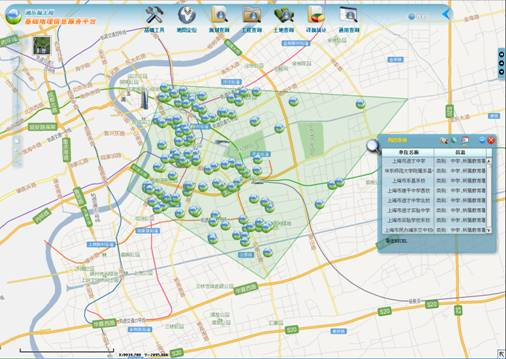
点击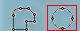中红色框选图标，可在地图上绘制圆形，单击左键开始，拖动鼠标控制圆形半径，松开鼠标左键结束后，可跳转到查询结果显示面板，地图上并显示其查询结果。
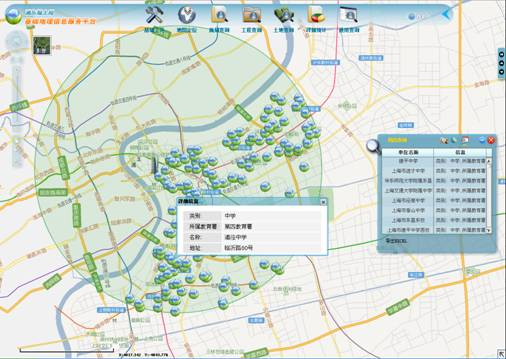
点击中红色框选图标，可将查询结果已Excel格式导出。
点击基础工具中的“态势分析”选项，打开“态势分析”工具。点击中的图标，可在“影响范围分析”操作面板和“路径分析”操作面板之间切换。
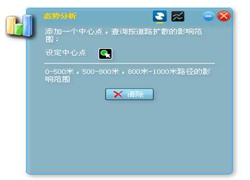
Ø 影响范围分析
点击中红色框选图标，进入“影响范围分析”操作面板。点击中红色框选图标，可在地图上添加中心点，以此点为中心路径做0-500米，500-800米，800-1000米的路径影响范围分析；并在地图上显示。
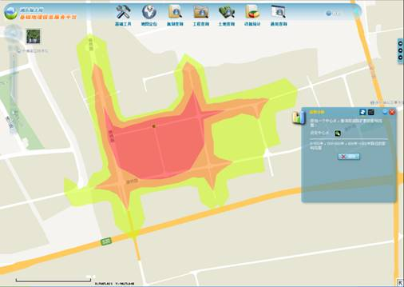
Ø 路径分析
点击中红色框选图标，进入“路径分析”操作面板。点击添加路径起始点，点击添加路经障碍点，点击 清除地图上已添加的图标和已绘制的路线。
清除地图上已添加的图标和已绘制的路线。
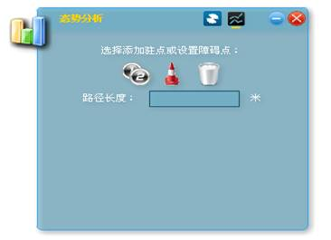
未设置路障时路线的绘制情况：
设置一个路障之后的路线的绘制情况:
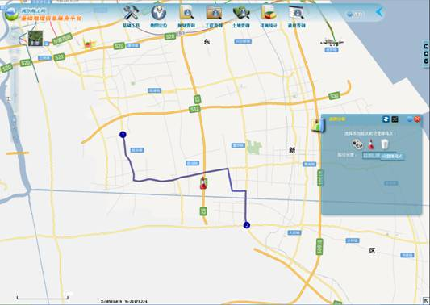
点击基础工具中的“滤镜“选项，打开滤镜工具界面。这个工具提供了两个滤镜效果，卷帘和聚光灯滤镜。滤镜小工具界面如下：
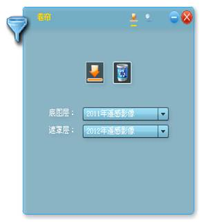 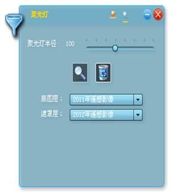
在滤镜式中点选图标或后，在地图中应用前后的效果对比如下图；应用滤镜前效果如下：（若要释放工具可点选滤镜界面中的 图标）
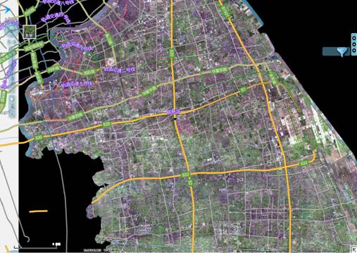
应用卷帘滤镜后的效果图：（注意下图上半部分与未应用滤镜的地图细微差别。）
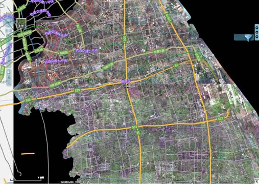
如果在滤镜设置界面设置地图层和遮罩层为相同的影像则应用滤镜后的效果如下图：
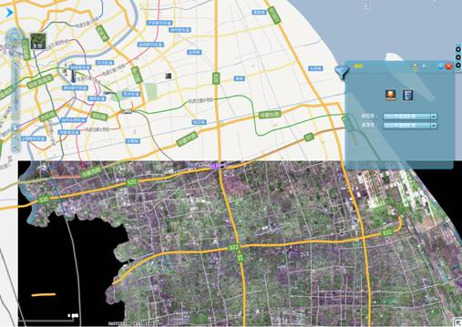
应用聚光灯滤镜后的效果：（注意到中央偏右部分与为应用滤镜的地图的区别。）
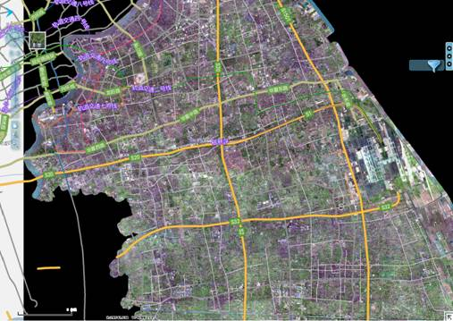
如果在滤镜设置界面设置地图层和遮罩层为相同的影像则应用滤镜后的效果如下图：
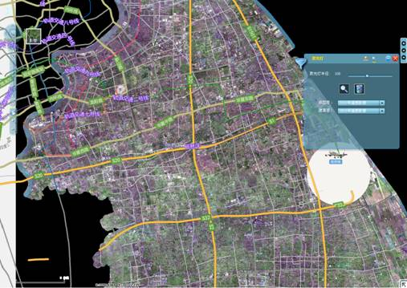
点击基础工具中的地图保存选项，打开地图保存的工具界面。
点击保存地图图片，则会将当前视图范围内的地图保存成图片文件（为.png格式的文件），保存到本地电脑上。点击保存地图图片后，系统会弹出选择保存位置和设置文件名的对话框。
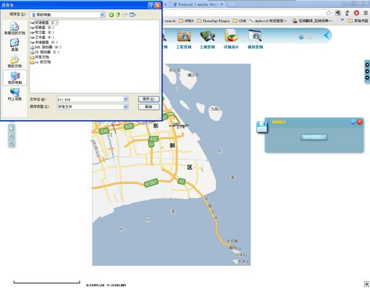
在基础工具中点击“地图打印”选项；打开地图打印操作界面。输入标题和副标题（可选填），点击“打印”按钮，就会进行地图打印服务。
视浏览器的不同，会有不同的表现效果。
在IE下，会有类似下面的界面：
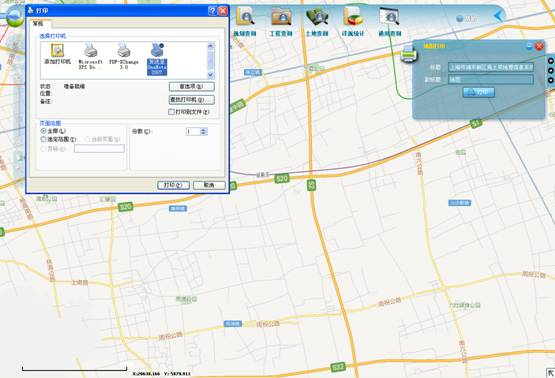
在chrome下，有类似下图的打印界面。
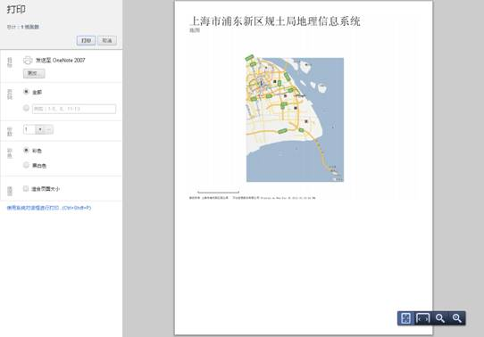
点选系统功能模块中的地图定位，展开地图定位的可选项。如下图红色方框圈中部分。
Ø 街道/居委会定位。点击地图定位中的“街道定位”选项，打开“街道定位”工具界面。
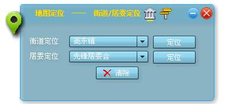
选定街道后点定位，即可将地图定位到相应的街道。在地图上会以网格覆盖该指定的区域，效果如下图：
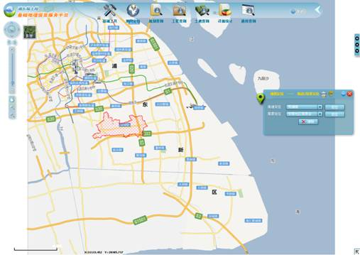
再选中相应街道下的居委会，可定位该居委会管辖范围。效果如下图：
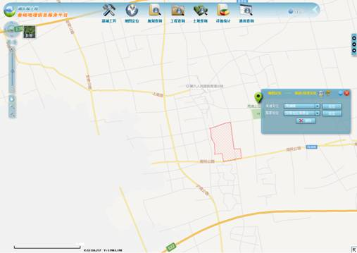
Ø
交叉路口定位。点击地图定位工具中的图标，即可切换至交叉路口定位界面，界面类似下图：
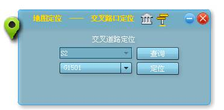
输入要查询的道路，点击查询后会更新下面的下拉列表中的与输入的道路相交的道路的信息。再在第二个列表中选择与输入到道路相交的道路后，点击定位，则地图会定位到交叉路口处，并用星星符号标记处交叉口。小姑类似下图：
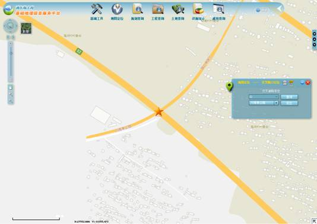，
点选系统功能模块中的“规划查询“，展开”规划查询“的可选项。如下图红色方框圈中部分：
点击“详细规划”选项，进入“详细规划”工具界面。
填入查询信息，点击“查询“按钮可查询到相关信息，显示在地图中，和小工具中。点击清除则会清除所有输入的查询信息。点击查询后的效果图类似下图。

在工具窗口中，点击对应项后的详细信息图标，或地块信息图标。前者会转到浦东新区规划和土地管理局—数据中心。后者则在小工具中显示详细地块规划的查询结果。效果类似下图：
“详细规划”的小工具还提供空间查询的功能，可以在地图上圈出一块范围，查询这块范围内所有的详细规划信息。小工具界面如下：
查询后的效果类似下图：在所画原型范围内的所有详细规划信息都显示在小工具的详细规划信息界面中，下图中显示了两条规划信息。在地图中用红色色块标注，下图由于比例尺较大，显示为两个红点
放大后的效果如下图：
点击“单元规划”选项，进入“单元规划”工具界面。工具界面类似于“详细规划”的工具的界面。如下图（单元规划的属性查询界面）：
单元规划空间查询界面如下图（使用方法可参考详细规划的空间查询部分）：
界面和操作类似于详细规划，显示信息内容有不同，操作上与详细规划基本一致。
单击“总体规划”选项，进入“总体规划”小工具界面。如下图：输入的信息越全面，越精确则在地图上的定位也就越准确
输入用地类别为“C”的查询结果如下图：
运用空间查询后的结果如下图：
上图小工具的结果界面显示了不同地块信息的对应的颜色。
点选系统功能模块中的“工程查询”，展开“工程查询”的可选项。如下图红色方框圈中部分。
点击“选址意见”选项，打开“选址意见”小工具界面。
输入相关信息后点击查询后转到小工具的结果页面，并在地图上定位到相关位置。
若输入上图中的信息，点击查询后的的界面类似于下图（空间查询后也有类似的结果）：
上图中点选小工具界面中的结果选项中的明细图标会转到类似下图所示的界面，来显示明细信息。
主要用于查询和在地图上显示，用地方面的相关信息。
请参考（3.5.2）选址意见的使用。
主要用于查询和在地图上显示工程方面的相关信息。
请参考（3.5.1 部分）选址意见的使用
点选系统功能模块中的“土地查询”，展开“土地查询”的可选项。如下图红色方框圈中部分。
点击“违法用地”选项，打开“违法用地”小工具界面，如下图：
输入用地名称或编号即点击查询即可在地图上地位到违法用地的地块。
应用空间查询可以查询，一定区域范围内的所有违法用地的信息，在小工具的结果界面显示，点击对应项的详细信息可链接到浦东新区规划和土地管理局—数据中心网站。应用空间查询后的效果类似下图，其中所有违法用地在地图上用红色色块表示。
点选系统功能模块中的“详规统计”，展开“详规统计”的可选项。如下图红色方框圈中部分。
点击“街镇统计”选项，打开“街镇统计”小工具界面，如下图：
上图点击统计后的界面类似下图：
不同的色块表示该色块内，在指定的时间段内规划的数目在色块所代表的范围内。
在详规统计结果中选中某一项，则地图定位到该项所代表的位置，并且在地图上显示该地块在指定时间段内的规划数目的图形化信息，选中某项后的效果类似于下图：
点击柱状图界面右上角的饼图标签，可切换到饼图模式。效果类似下图：
在街镇统计的小工具的工具栏上点击图标，会切换到设置颜色与分级界面，效果类似下图：
这里可以设置，不同区间的颜色，以及该颜色所能覆盖的分级的数目：如下图设置后，再进行显示，下面的截图显示了相同的数据下，当相同颜色代表不同数目时，地图上色块范围变化：
点击“全区统计”选项，打开“全区统计”小工具界面，如下图：
点击统计后，然后点击地图上的色块后界面类似下图：
点选系统功能模块中的“通用查询”，展开“通用查询”的可选项。如下图红色方框圈中部分。
点击“通用查询”选项，打开通用查询小工具界面，点击小工具上的图标，分别可以导航到空间查询界面，查询结果界面，规划信息界面，地块信息界面。
首先点击图标，在地图上圈出一块空间，进行查询，查询后的界面和小工具的显示界面类似下图所示：
下图在查询结果界面中可看出，这里查询到的信息，包含了之前的规划查询，工程查询，地块查询，另外还包含了选址范围和用地范围的查询，需要查看相关的信心只要展开对应分类，即可查看该分类下的，分类整理好的详细信息。当相应分类下的项被选中后，地图上会对应的标出这些项的位置等相关信息，并用气泡窗口显示示其信息，指示其位置。
下图演示了选中一个具体的项后的效果，类似以下界面：

在功能菜单的最右边，有一个问号图标开头的帮助菜单，如下图红框所示：
点击帮助按钮后的界面，可以找到我们的网站，您可以通过这里联系我们。效果类似下图：